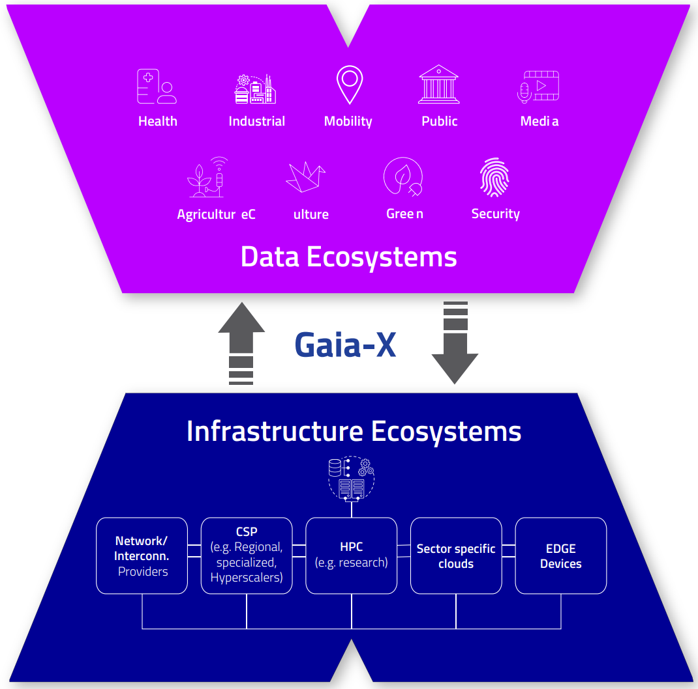

Table of Contents
EU Initiatives and Programs
About
In this chapter, we highlight major EU-level initiatives and programs that drive the implementation of data spaces and digital transformation. By mapping these initiatives, we identify strategic alignments, best practices, and collaborative opportunities relevant to the project. These insights help to position the toolbox within ongoing European efforts, ensuring compatibility and maximizing its contribution to broader data-sharing infrastructures.
Connecting Europe Facility
The Connecting Europe Facility (CEF) [20] programme is a key EU funding instrument to promote growth, jobs and competitiveness through targeted investments in infrastructure at European level. It is articulated through three main pillars:
-
CEF Energy is a trans-European network for Energy policy, that aims at supporting investments in building new cross-border energy infrastructure in Europe or rehabilitating and upgrading the existing one.
-
CEF Transport is the funding instrument to realise European transport infrastructure policy, supporting investments in building, rehabilitating and upgrading the existing framework.
-
CEF Digital aims to contribute to the development of projects of common interest relating to the deployment of and access to secure digital networks, including 5G systems, and to increasing the resilience and capacity of digital backbones in Union territories by linking them to neighbouring territories, as well as to the digitisation of transport and energy networks.
The CEF initiative is of great interest to CELINE as it can benefit from best practices in all three pillars. Moreover, CELINE can bring valuable insights to CEF especially on the Energy pillar, by providing the lessons learnt on the three demonstrators which can drive to greater investment in energy communities.
Digital Europe Programme
The Digital Europe Programme [21] is an EU initiative aimed at supporting digital transformation across the European Union. Its primary focus is on bolstering areas such as artificial intelligence (AI), cybersecurity, and advanced digital skills. These areas are crucial for ensuring Europe remains competitive in the global digital economy and for fostering the adoption of new technologies at scale. The program provides funding for digital infrastructure, such as supercomputing and cloud services, while also supporting the development of new digital services and solutions.
In the context of CELINE, the Digital Europe Programme aligns well with the project's objectives to foster digital innovations in the energy sector. CELINE's approach to developing cross-sector data-driven services, powered by AI and advanced digital tools, complements the goals of the Digital Europe Programme by promoting the integration of digital technologies across various sectors. Moreover, the focus on enhancing digital and energy literacy within CELINE supports the Programme's emphasis on improving digital skills at all levels, ensuring citizens are prepared for the challenges of a digital society.
By fostering interoperability and digital sovereignty, both CELINE and the Digital Europe Programme contribute to Europe’s broader goal of a connected, data-driven economy where digital transformation benefits citizens, communities, and businesses.
European Open Science Cloud (EOSC)
The European Open Science Cloud (EOSC) [22] aims to provide European researchers, innovators, companies, and citizens with a federated and open multi-disciplinary environment where they can publish, find, and reuse data, tools, and services for research, innovation, and educational purposes. This environment will operate under well-defined conditions to ensure trust and safeguard the public interest. The EOSC enables a step change across scientific communities and research infrastructures towards seamless access; FAIR (Findability, Accessibility, Interoperability and Reusability) management; reliable reuse of research data and all other digital objects produced along the research life cycle (e.g., methods, software, and publications).
The European Open Science Cloud (EOSC) ultimately aims to develop a 'Web of FAIR Data and services' for science in Europe, upon which a wide range of value-added services can be built. These range from visualisation and analytics to long-term information preservation or the monitoring of the uptake of open science practices. The EOSC is recognised by the Council of the European Union among the 20 actions of the policy agenda 2022-2024 of the European Research Area (ERA) with the specific objective to deepen open science practices in Europe. It is also recognised as the "science, research and innovation data space," which will be fully articulated with the other sectoral data spaces defined in the European strategy for data. Full deployment of the EOSC will lead to higher research productivity, new insights and innovations, as well as improved reproducibility and trust in science.
The implementation of the EOSC is based on a long-term process of alignment and coordination pursued by the Commission since 2015 with the many and diverse stakeholders of the European research landscape. In the initial phase of implementation (2018-2020), the European Commission invested around €250 million to prototype components of the EOSC through calls for projects under Horizon 2020. The European Commission also launched an interim EOSC Governance to prepare the strategic orientations for the EOSC implementation post-2020. The current phase of implementation (2021-2030) is taking place in the context of the EOSC European co-programmed partnership launched at the Research and Innovation Days 2021 and according to a Strategic Research and Innovation Agenda (SRIA) which is co-developed with the entire EOSC community. EOSC is transitioning to a more stakeholder-driven approach with a shared vision, common objectives and complementary contributions at European, national and institutional levels. A co-investment (with in kind and financial contributions) by the EU and non-EU partners of at least €1 billion is foreseen for the next 7 years. Overall progress is steered by a new EOSC tripartite governance involving the EU represented by the European Commission, the participating countries represented in the EOSC Steering Board, and the research community represented by the EOSC Association.
Relevance to CELINE
EOSC aims to offer shared services for research purposes which could be of potential use for CELINE in case some information stored have links with the themes of the project.
GAIA-X
The Gaia-X [23] initiative began in 2019 as a joint effort by the German Federal Ministry for Economic Affairs and Energy and its French equivalent to create a secure, federated, and sovereign data infrastructure for Europe. Later established as Gaia-X AISBL, a non-profit association based in Brussels, coordinates a network of cloud service providers, system integrators, research organizations, and regulatory bodies. Its primary goal is to define and uphold a shared set of open interfaces, technical specifications, and governance policies that facilitate interoperable and trustworthy data exchange across various platforms, all without replacing existing cloud services.
At the heart of Gaia-X’s framework is the idea of “dataspaces,” which are specialized ecosystems, like those in energy, healthcare, or transportation, where organizations can legally share and utilize data following European regulations. A certification framework supports these data spaces, ensuring that all participants meet established standards for security, privacy, data portability, and transparency. To date, over 300 organizations have joined this initiative, including major industry players like Siemens, SAP, Deutsche Telekom, Atos, and Orange, along with many small to medium-sized enterprises, academic research institutions, and public sector bodies. Participants form thematic working groups focusing on turning Gaia-X principles into specific service offerings, interoperability profiles, and connector specifications.
Gaia-X proposes the "Split-X" model (Figure 2), a decentralized architecture that distributes data processing, storage, and service orchestration across independent providers while preserving trust, interoperability, and data sovereignty. Coordinated by Gaia-X Federation Services, it enables secure collaboration across energy, healthcare, and mobility sectors, allowing organizations to retain full control over their data and services.

Figure 2: ‘Split-X’ Model for a decentralized architecture that distributes data processing, storage, and service orchestration across independent data and service providers [23].
Relevance to CELINE
For the CELINE project, affiliation with the Gaia-X framework offers multiple advantages. First, CELINE will benefit from an established governance structure that guarantees data sovereignty and compliance with the General Data Protection Regulation (GDPR) and other relevant European directives. Second, by adopting Gaia-X’s open-interface specifications and certification schemes, CELINE can ensure plug-and-play interoperability among heterogeneous platforms and devices. Finally, as Gaia-X data spaces are designed to integrate seamlessly into broader digital ecosystems—such as cross-border energy marketplaces or federated digital twin environments—CELINE will be positioned to leverage this broader infrastructure, thereby reducing integration risk, accelerating deployment, and laying the groundwork for a scalable, resilient, and AI-enhanced smart-grid solution.
Gen4AI / GenAI4EU
Generative AI [24] is introducing new challenges but also raising and improving AI results. The new and upcoming EC strategies, such as Apply AI Strategy (Q3 2025), AI in science strategy (Q3 2025), and Data Union Strategy (Q3 2025), will shape together with the implementation of the AI Act.
The GenAI defining characteristic, in contrast to AI/ML approaches for classification, regression, and clustering, is its ability to contextualise and consolidate available information into new synthetic data. This makes GenAI promising for decision support applications, offering improved situation awareness, bridging critical data gaps, and simplifying complex decision-making processes.
The initiative Gen4AI aims to support start-ups and SMEs in developing and validating new GenAI models, adapting existing models to specific sectors and types of data, integrating and testing the GenAI solutions in existing workflows and testing these in regulatory sandboxes and real-life settings.
The expected outcomes are: Trustworthy AI Compliance, optimise existing workflows, enhance human capabilities, reduce dependencies, and be validated for application.
Relevance to CELINE
The initiative could be beneficial for the project, depending on the AI systems that will be used through the CELINE project. It is not the most relevant because it will depend on the AI systems but it could help to leverage the AI systems.